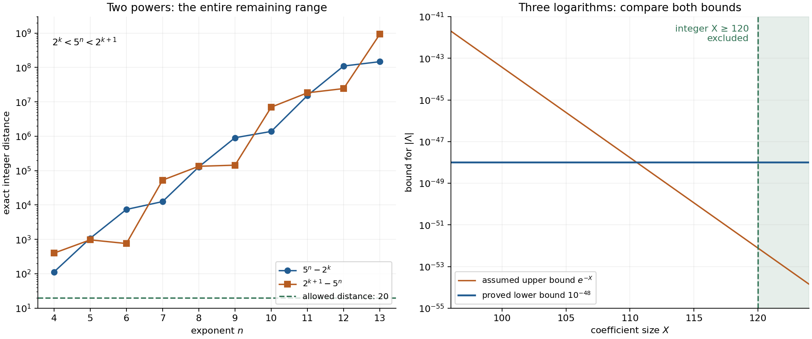

Solving Diophantine equations completely: reduction, lattices and certificates
Written by GPT-6 Astra (OpenAI) in Codex, Ultra setting, October 2026. Self-checked by the writing AI. Public domain (CC0).
A large effective bound and a list of small solutions answer different questions. The bound limits every possible solution; the list records what a finite search found. A complete resolution connects them by a proved reduction and an exhaustive search over the resulting range. This lesson builds that connection for two exponential equations, and gives an exact three-logarithm lattice certificate.
We use Two logarithms II: explicit lower bounds, Theorem 7.1, for the initial analytic estimate, and Powers of 2 and 3, Theorem 11.3 and equation (11.13), for Legendre's criterion and rational logarithm intervals. The first equation also reproduces Theorem 11.4 there. The lattice arguments, reduction lemmas, finite searches and their certification are proved below.
1. From an equation to a finite certificate
Suppose an equation yields a nonzero logarithmic form \(\Lambda=b_1\log\alpha_1+\cdots+b_r\log\alpha_r\) and an upper bound that decreases exponentially in a size parameter \(X\). An explicit lower bound for \(|\Lambda|\) first gives \(X\le X_0\). The inequality may make \(X_0\) too large for direct enumeration. A continued-fraction calculation or a lattice calculation can then give a much stronger lower bound for this particular form, throughout the finite coefficient range. Comparing the two bounds reduces \(X\). Finally one checks every remaining possibility using exact arithmetic.
Each transition has its own mathematical obligation. The logarithmic form must be nonzero; the analytic theorem's heights, degree and coefficient parameter must be correct; the reduction must apply to every possible coefficient vector; and the last search must exhaust the proved range. Numerical precision also belongs in the proof: a decimal that appears positive does not certify a strict inequality.
For two logarithms, division by one of them leads to \(|m-n\theta|\). If \(m/n=a/b\) in lowest terms and
\[ \left|\theta-\frac mn\right|<\frac1{2n^2}, \]then \(b\le n\), so Legendre's criterion makes \(a/b\) a convergent of \(\theta\). Writing \(m=ga,n=gb\) gives
\[ |m\log\alpha-n\log\beta| =g|a\log\alpha-b\log\beta|,\qquad g\ge1. \]Thus a lower bound for the reduced convergent's error also bounds the original error. This common factor is essential when using convergents to enumerate all possibilities.
An additive term changes the problem to \(u\theta-v+\mu\). The distance-to-integers argument in the next section handles it. With three or more logarithms, an integer lattice records several coefficients at once.
2. An inhomogeneous continued-fraction reduction
For a real number \(x\), let \(\|x\|=\min_{k\in\mathbb Z}|x-k|\). Choosing nearest integers proves \(\|x+y\|\le\|x\|+\|y\|\), and, for an integer \(u\), \(\|ux\|\le |u|\|x\|\). These inequalities are useful even when the nearest integers are not known individually.
Lemma 21.1 (Baker–Davenport reduction). Let \(M\ge1\) and \(q\ge1\) be integers, \(\theta,\mu\) real, \(A>0\), and \(B>1\). Put
\[ \epsilon=\|q\mu\|-M\|q\theta\|. \tag{21.1} \]If \(\epsilon>0\), there are no integers \(u,v,w\) satisfying
\[ 0<u\le M,\qquad 0<|u\theta-v+\mu|<AB^{-w},\qquad w\ge\frac{\log(Aq/\epsilon)}{\log B}. \tag{21.2} \]Proof. Multiplication by \(q\), invariance under integer translation, and the preceding triangle inequality give
\[ \|q\mu\|\le q|u\theta-v+\mu|+u\|q\theta\| <qAB^{-w}+M\|q\theta\|. \]Consequently \(\epsilon<qAB^{-w}\). Taking logarithms and dividing by the positive number \(\log B\) gives the strict opposite of the last inequality in (21.2). \(\square\)
In practice \(q\) is a convergent denominator of an irrational \(\theta\), since this tends to make \(\|q\theta\|\) small. The common choice \(q>6M\) is a search rule, not a hypothesis used by this proof and not a guarantee that \(\epsilon>0\). Certified intervals must establish that strict positivity. The argument also proves the endpoint exclusion in (21.2), because the small-linear-form inequality is strict. The author version of Dujella and Pethő, Generalization of a theorem of Baker and Davenport, Lemma 5(a), gives the familiar convergent formulation.
3. What an LLL certificate proves
Let \(z_1,\ldots,z_n\) be linearly independent integer vectors in \(\mathbb R^n\). Their lattice is \(\Gamma=\sum_i\mathbb Zz_i\). Define the Gram–Schmidt vectors and coefficients by
\[ z_i^*=z_i-\sum_{j<i}\mu_{ij}z_j^*,\qquad \mu_{ij}=\frac{\langle z_i,z_j^*\rangle}{d_j},\qquad d_j=\langle z_j^*,z_j^*\rangle>0. \tag{21.3} \]The vectors \(z_i^*\) are mutually orthogonal: taking the inner product with an earlier \(z_j^*\) cancels exactly its projection term. Induction also gives equality of the first \(i\) spans. All entries in (21.3) are rational and can be checked exactly.
A basis is LLL reduced with parameter \(3/4\) if
\[ |\mu_{ij}|\le\tfrac12\quad(j<i),\qquad d_i\ge(\tfrac34-\mu_{i,i-1}^2)d_{i-1}\quad(2\le i\le n). \tag{21.4} \]Proposition 21.2 (the shortest-vector guarantee). An LLL reduced basis satisfies
\[ \|x\|_2\ge2^{-(n-1)/2}\|z_1\|_2 \quad(0\ne x\in\Gamma). \tag{21.5} \]For any basis, the possibly stronger certified bound \(\|x\|_2^2\ge\min_jd_j\) holds.
Proof. Write \(x=\sum_i k_i z_i\), with integers \(k_i\), and let \(j\) be the largest index with \(k_j\ne0\). Projection on the orthogonal complement of the first \(j-1\) basis vectors sends \(x\) to \(k_jz_j^*\). Hence \(\|x\|_2^2\ge k_j^2d_j\ge d_j\), proving the assertion for an arbitrary basis. Conditions (21.4) give \(d_i\ge d_{i-1}/2\). Thus \(d_j\ge2^{-(j-1)}d_1\ge2^{-(n-1)}\|z_1\|_2^2\), which proves (21.5). \(\square\)
This is the guarantee of Lenstra, Lenstra and Lovász, Factoring polynomials with rational coefficients, Proposition (1.11). The computed first vector is an upper bound for the shortest length; (21.5) supplies the lower bound needed below.
Proposition 21.3 (exact reduction terminates). Integer row operations consisting of size reductions and adjacent swaps produce a basis satisfying (21.4) in finitely many steps.
Proof. Work at an index \(k\), initially two. In decreasing order of \(j=k-1,\ldots,1\), replace \(z_k\) by \(z_k-rz_j\), where \(r\) is a nearest integer to the current \(\mu_{kj}\). This makes \(|\mu_{kj}|\le1/2\); later reductions with smaller indices do not change it. The operation preserves the integer lattice, and its inverse adds \(rz_j\). If the adjacent inequality in (21.4) holds, increase \(k\). Otherwise exchange \(z_{k-1},z_k\) and restart at \(\max\{2,k-1\}\). Terminate when \(k=n+1\). At each stage the earlier prefix is reduced; hence termination gives all of (21.4).
Here is a decreasing integer that proves termination. Put
\[ D_i=\det(\langle z_r,z_s\rangle_{r,s\le i}) =\prod_{j=1}^i d_j,\qquad \mathcal P=\prod_{i=1}^{n-1}D_i. \tag{21.6} \]The determinant identity follows by the triangular Gram–Schmidt change of basis, whose determinant is one. Each \(D_i\) is a positive integer. Size reductions preserve every prefix lattice and hence every \(D_i\). A swap at \(k\) preserves every factor except \(D_{k-1}\). Projecting the new \((k-1)\)-st vector on the orthogonal complement of the first \(k-2\) vectors shows that the ratio of the new factor to the old is
\[ \frac{d_k+\mu_{k,k-1}^2d_{k-1}}{d_{k-1}}<\frac34. \]Thus each swap reduces the positive integer \(\mathcal P\) by a factor below \(3/4\). There are finitely many swaps. Between swaps the index increases after finitely many size reductions, so the entire algorithm terminates. For \(n=1\) there is nothing to do. \(\square\)
For a certificate, record the integer change-of-basis matrix as well as the output basis. A determinant of \(\pm1\) and the exact basis identity certify equality of lattices. Exact values of the rational \(\mu_{ij}\) and \(d_i\) then certify (21.4). No floating-point claim of “LLL reduced” is needed.
4. A lattice lower bound for a logarithmic form
Lemma 21.4 (de Weger-type reduction). Let \(\alpha_j>0\), \(C>0\), \(X_0\ge0\), and \(b_j\in\mathbb Z\) with \(|b_j|\le X_0\), not all zero. Set \(\Lambda=\sum_jb_j\log\alpha_j\). Let \(A_C\) be the integer matrix whose first \(n-1\) rows are the corresponding rows of the identity matrix and whose last row is \((\lfloor C\log\alpha_1\rfloor,\ldots, \lfloor C\log\alpha_n\rfloor)\). Suppose \(A_C\) is nonsingular and every nonzero vector of \(\Gamma=A_C\mathbb Z^n\) has Euclidean norm at least \(l_0\). If \(l_0^2>(n-1)X_0^2\), then
\[ C|\Lambda|\ge \sqrt{l_0^2-(n-1)X_0^2}-nX_0. \tag{21.7} \]Proof. The vector \(A_Cb\) is nonzero by nonsingularity. Its first \(n-1\) coordinates are \(b_1,\ldots,b_{n-1}\); write its last coordinate as \(s\). Thus \(l_0^2\le\|A_Cb\|_2^2\le(n-1)X_0^2+s^2\), giving the square-root lower bound for \(|s|\). On the other hand,
\[ |s-C\Lambda| \le\sum_j|b_j|\, |\lfloor C\log\alpha_j\rfloor-C\log\alpha_j| \le nX_0. \]The ordinary triangle inequality now proves (21.7). \(\square\)
The determinant of \(A_C\) is \(\lfloor C\log\alpha_n\rfloor\). Thus \(\alpha_n\ne1\) alone does not certify nonsingularity for an arbitrarily small \(C\); check the actual integer. Also, the right side of (21.7) must be positive before it gives useful information. The sufficient condition is \(l_0^2>(n^2+n-1)X_0^2\).
Corollary 21.5 (combining the two directions). Suppose in addition that \(0<|\Lambda|<A\exp(-\lambda X)\), with \(A,\lambda>0\), and that the right side \(E\) of (21.7) is positive. Then
\[ X<\frac{\log(AC/E)}{\lambda}. \tag{21.8} \]Proof. We have \(0<E/C\le|\Lambda|<A\exp(-\lambda X)\). Take logarithms and rearrange. \(\square\)
The small upper bound comes from the original Diophantine equation. A bound \(|b_j|\le X_0\) by itself does not imply a smaller bound for the coefficients. The lattice supplies a lower bound for the linear form, which must be compared with that additional upper bound.
5. Two complete exponential resolutions
All exponents in this section are positive integers. We resolve
\[ |2^m-3^n|\le20,\qquad |2^m-5^n|\le20. \tag{21.9} \]The first calculation reproduces the earlier continued-fraction certificate; the second uses the same steps with different exact data. In both cases unique prime factorization ensures that the two powers are unequal and that their logarithmic form is nonzero.
5.1. The powers of two and three
Theorem 21.6. All solutions of the first inequality in (21.9) are
\[ \begin{array}{c|l} n&\text{allowed }m\\ \hline 1&1,2,3,4\\ 2&1,2,3,4\\ 3&3,4,5\\ 4&6\\ 5&8 \end{array} \tag{21.10} \]There are no solutions with \(n\ge6\).
Proof: initial bound. For \(n\ge4\), the argument of Theorem 11.4 gives \(m\ge6\), \(n<m\), and
\[ 0<|m\log2-n\log3|<30\,2^{-m}. \]For completeness, \(2^m\ge3^4-20=61\); if \(n\ge m\), then \(3^n-2^m\ge3^m-2^m>20\). For positive \(x,y\), integration gives \(|\log x-\log y|\le |x-y|/\min(x,y)\). Apply this with \(x=2^m,y=3^n\) and use \(20/2^m\le5/16\). The resulting constant is \(20/(1-5/16)=320/11<30\).
Theorem 7.1 with field degree one, height parameters \(a_1=1,a_2=\log3\), and coefficients \(m,-n\), gives
\[ m\log2<\log30+ 21600\log3\bigl(\max\{10,\log(2m)\}\bigr)^2. \tag{21.11} \]Indeed \(h(2)=\log2<1\), \(h(3)=\log3>1\), and the theorem's coefficient parameter is \(m/\log3+n<2m\). For \(x\ge10^7\), set
\[ F_3(x)=x\log2-21600\log3\log^2(2x)-\log30. \]The rational bounds \(\log2>69/100,\ \log3<11/10,\ \log(2\cdot10^7)<17,\ \log30<4\) give \(F_3(10^7)>33356>0\). Also \(\log(2x)/x\) decreases there, and hence
\[ F_3'(x)> \frac{69}{100}-\frac{43200(11/10)17}{10^7} =\frac{9519}{15625}>0. \]The maximum in (21.11) equals \(\log(2x)\) on this range. Therefore \(m<10^7\).
Proof: reduction. For \(n\ge6\),
\[ \left|\frac{\log3}{\log2}-\frac mn\right| \le\frac{20}{n\log2(3^n-20)}<\frac1{2n^2}. \tag{21.12} \]The last inequality holds at six because \((69/100)(3^6-20)>40\cdot6\). The quantity \((3^n-20)/n\) increases: the numerator of its successive difference is \((2n-1)3^n+20>0\). Legendre therefore applies to \(a/b=m/n\) in lowest terms, and the reduced numerator satisfies \(a<10^7\).
The table lists every eligible convergent and the first excluded one. The sign is that of \(p_j\log2-q_j\log3\), and each integer \(L_j\) satisfies \(10^8|p_j\log2-q_j\log3|>L_j\).
| \(j\) | \(a_j\) | \(p_j\) | \(q_j\) | sign | \(L_j\) |
|---|---|---|---|---|---|
| 0 | 1 | 1 | 1 | \(-\) | 40546510 |
| 1 | 1 | 2 | 1 | + | 28768207 |
| 2 | 1 | 3 | 2 | \(-\) | 11778303 |
| 3 | 2 | 8 | 5 | + | 5211600 |
| 4 | 2 | 19 | 12 | \(-\) | 1355103 |
| 5 | 3 | 65 | 41 | + | 1146290 |
| 6 | 1 | 84 | 53 | \(-\) | 208813 |
| 7 | 5 | 485 | 306 | + | 102223 |
| 8 | 2 | 1054 | 665 | \(-\) | 4365 |
| 9 | 23 | 24727 | 15601 | + | 1819 |
| 10 | 2 | 50508 | 31867 | \(-\) | 726 |
| 11 | 2 | 125743 | 79335 | + | 366 |
| 12 | 1 | 176251 | 111202 | \(-\) | 360 |
| 13 | 1 | 301994 | 190537 | + | 6 |
| 14 | 55 | 16785921 | 10590737 | \(-\) | 5 |
All rows before the last have \(L_j\ge1\), and subsequent numerators are larger still. Multiplication by the common factor \(g\ge1\) does not decrease the error. Thus
\[ |m\log2-n\log3|>10^{-8}. \tag{21.13} \]Together with the upper bound \(20/(3^n-20)\), this gives \(3^n<2000000020\). Since \(3^{20}=3486784401\), every solution has \(n\le19\). Cases below six are checked separately below.
For \(6\le n\le19\), let \(k=\lfloor\log_2(3^n)\rfloor\). The following exact integers give the distances to the powers on either side of \(3^n\).
| \(n\) | \(k\) | \(3^n-2^k\) | \(2^{k+1}-3^n\) |
|---|---|---|---|
| 6 | 9 | 217 | 295 |
| 7 | 11 | 139 | 1909 |
| 8 | 12 | 2465 | 1631 |
| 9 | 14 | 3299 | 13085 |
| 10 | 15 | 26281 | 6487 |
| 11 | 17 | 46075 | 84997 |
| 12 | 19 | 7153 | 517135 |
| 13 | 20 | 545747 | 502829 |
| 14 | 22 | 588665 | 3605639 |
| 15 | 23 | 5960299 | 2428309 |
| 16 | 25 | 9492289 | 24062143 |
| 17 | 26 | 62031299 | 5077565 |
| 18 | 28 | 118985033 | 149450423 |
| 19 | 30 | 88519643 | 985222181 |
Every distance exceeds twenty. Every other power is farther away, so this excludes the whole range. For \(1\le n\le5\), enumerate every positive \(m\) with \(2^m\le3^n+20\), which is a finite integer test. The successful values are exactly (21.10). Their signed differences \(2^m-3^n\), in the order shown, are
\[ (-1,1,5,13),\quad(-7,-5,-1,7),\quad(-19,-11,5),\quad-17,\quad13. \]The full small-exponent search, including its excluded entries, is recorded in the certificate. This proves the theorem. \(\square\)
5.2. The powers of two and five
Theorem 21.7. All solutions of the second inequality in (21.9) are
\[ \begin{array}{c|l} n&\text{allowed }m\\ \hline 1&1,2,3,4\\ 2&3,4,5\\ 3&7 \end{array} \tag{21.14} \]There are no solutions with \(n\ge4\).
Proof: initial bound. Suppose first that \(n\ge3\). Then \(2^m\ge125-20=105\), so \(m\ge7\). If \(n\ge m\), then \(5^n-2^m\ge5^m-2^m>20\), a contradiction. Put \(\Lambda=m\log2-n\log5\ne0\). Integration as above gives
\[ |\Lambda|\le\frac{20}{2^m-20} \le\frac{640}{27}\,2^{-m}<24\,2^{-m}. \tag{21.15} \]The middle inequality uses \(20/2^m\le5/32\). Apply Theorem 7.1 with \(D=1\), \(a_1=1\), \(a_2=\log5\). The height conditions hold, and \(B'=m/\log5+n<2m\). Consequently
\[ m\log2<\log24+ 21600\log5\bigl(\max\{10,\log(2m)\}\bigr)^2. \tag{21.16} \]This implies \(m<2\cdot10^7\). To check the entire excluded interval, define \(F_5(x)=x\log2-21600\log5\log^2(2x)-\log24\). Use \(\log5<17/10\), \(\log(4\cdot10^7)<18\) and \(\log24<4\). At \(x=2\cdot10^7\) these give
\[ F_5(x)>1902716,\qquad F_5'(x)>\frac{69}{100} -\frac{43200(17/10)18}{2\cdot10^7} =\frac{19497}{31250}>0. \]As before, \(\log(2x)/x\) decreases, so the derivative remains positive. The maximum in (21.16) is \(\log(2x)\) throughout this interval. Thus (21.16) is impossible there.
Proof: reduction. For \(n\ge4\),
\[ \left|\frac{\log5}{\log2}-\frac mn\right| \le\frac{20}{n\log2(5^n-20)}<\frac1{2n^2}. \tag{21.17} \]At four the last inequality follows from \((69/100)(5^4-20)>40\cdot4\). The numerator of the successive difference of \((5^n-20)/n\) is \((4n-1)5^n+20>0\), so the inequality persists. The reduced fraction \(a/b=m/n\) is therefore a convergent of \(\log5/\log2\), with \(a<2\cdot10^7\).
The following table has the same meaning as before, with \(L_j<10^8|p_j\log2-q_j\log5|\).
| \(j\) | \(a_j\) | \(p_j\) | \(q_j\) | sign | \(L_j\) |
|---|---|---|---|---|---|
| 0 | 2 | 2 | 1 | \(-\) | 22314355 |
| 1 | 3 | 7 | 3 | + | 2371652 |
| 2 | 9 | 65 | 28 | \(-\) | 969481 |
| 3 | 2 | 137 | 59 | + | 432690 |
| 4 | 2 | 339 | 146 | \(-\) | 104100 |
| 5 | 4 | 1493 | 643 | + | 16288 |
| 6 | 6 | 9297 | 4004 | \(-\) | 6372 |
| 7 | 2 | 20087 | 8651 | + | 3544 |
| 8 | 1 | 29384 | 12655 | \(-\) | 2828 |
| 9 | 1 | 49471 | 21306 | + | 716 |
| 10 | 3 | 177797 | 76573 | \(-\) | 679 |
| 11 | 1 | 227268 | 97879 | + | 36 |
| 12 | 18 | 4268621 | 1838395 | \(-\) | 31 |
| 13 | 1 | 4495889 | 1936274 | + | 4 |
| 14 | 6 | 31243955 | 13456039 | \(-\) | 3 |
The last numerator exceeds \(2\cdot10^7\); every earlier row has \(L_j\ge1\). The same common-factor argument gives \(|\Lambda|>10^{-8}\). Hence \(5^n<2000000020\), and
\[ 5^{14}=6103515625>2000000020 \quad\Longrightarrow\quad n\le13. \tag{21.18} \]For \(4\le n\le13\), the exact nearest-power distances are:
| \(n\) | \(k\) | \(5^n-2^k\) | \(2^{k+1}-5^n\) |
|---|---|---|---|
| 4 | 9 | 113 | 399 |
| 5 | 11 | 1077 | 971 |
| 6 | 13 | 7433 | 759 |
| 7 | 16 | 12589 | 52947 |
| 8 | 18 | 128481 | 133663 |
| 9 | 20 | 904549 | 144027 |
| 10 | 23 | 1377017 | 7011591 |
| 11 | 25 | 15273693 | 18280739 |
| 12 | 27 | 109922897 | 24294831 |
| 13 | 30 | 146961301 | 926780523 |
All entries exceed twenty. For \(n=1,2,3\), check every \(m\ge1\) with \(2^m\le5^n+20\); the upper endpoints for \(m\) are respectively four, five and seven. The successful differences are
\[ (-3,-1,3,11),\qquad(-17,-9,7),\qquad3, \]giving exactly (21.14). \(\square\)
5.3. Why the numerical tables are proofs
For a rational \(x>1\), put \(z=(x-1)/(x+1)\). The positive series and geometric remainder proved in (11.13) give
\[ L_N(x)=2\sum_{j=0}^{N-1}\frac{z^{2j+1}}{2j+1}, \qquad L_N(x)<\log x< L_N(x)+\frac{2z^{2N+1}}{(2N+1)(1-z^2)}=U_N(x). \tag{21.19} \]Use \(N=100\) for \(x=2,3,5\). Start the continued-fraction calculation with the interval
\[ [L_N(p)/U_N(2),U_N(p)/L_N(2)]. \]At each step both endpoints have the same integer part. Subtract that integer and invert the interval, reversing its endpoints. This certifies every partial quotient in the two tables.
The error interval for a row \(a,b\) is \([aL_N(2)-bU_N(p),aU_N(2)-bL_N(p)]\). It lies strictly on one side of zero. Multiplying its distance from zero by \(10^8\) and taking the integer part produces the printed \(L_j\). The recurrence \(p_j=a_jp_{j-1}+p_{j-2}\), \(q_j=a_jq_{j-1}+q_{j-2}\), with \((p_{-2},p_{-1})=(0,1)\) and \((q_{-2},q_{-1})=(1,0)\), gives all table entries. Their determinant identities \(|p_jq_{j-1}-p_{j-1}q_j|=1\) are also checked.
For the scalar logarithm bounds, (21.19) certifies \(69/100<\log2<7/10\), \(1<\log3<11/10\) and \(1<\log5<17/10\). Positive exponential partial sums give
\[ \sum_{j=0}^{80}\frac{17^j}{j!}>2\cdot10^7,\qquad \sum_{j=0}^{80}\frac{18^j}{j!}>4\cdot10^7,\qquad \sum_{j=0}^{12}\frac{4^j}{j!}>30. \]These are finite rational comparisons. Also \(2x\ge2\cdot10^7>2^{20}\) at either initial endpoint, so \(\log(2x)>20(69/100)>10\). No floating-point estimate is used to certify these inequalities.
The equation certificate program reconstructs the intervals, convergents, analytic margins and final integer searches. Its machine-readable data include all successful and unsuccessful small-exponent tests. The preceding proofs explain why those finite tests settle (21.9) for arbitrarily large positive exponents.
6. A three-logarithm certificate from \(10^{20}\)
Consider
\[ \Lambda=b_1\log2+b_2\log3+b_3\log5,\qquad 0<X=\max_j|b_j|\le X_0=10^{20}. \tag{21.20} \]We first bound \(|\Lambda|\) uniformly on this coefficient range. Then we show precisely what follows if the equation under study also gives \(|\Lambda|<e^{-X}\).
Choose \(C=10^{70}\), and put \(N_p=\lfloor C\log p\rfloor\). The following expressions give each integer exactly, split into two blocks of decimal digits:
\[ \begin{aligned} N_2={}&69314718055994530941723212145817656\cdot10^{35}\\ &+80755001343602552541206800094933936. \end{aligned} \] \[ \begin{aligned} N_3={}&109861228866810969139524523692252570\cdot10^{35}\\ &+46474905578227494517346943336374942. \end{aligned} \] \[ \begin{aligned} N_5={}&160943791243410037460075933322618763\cdot10^{35}\\ &+95256013542685177219126478914741789. \end{aligned} \]These floors are certified as follows. For \(p=2,3,5\), write \(p=2^k y\) with \(1\le y<2\). Use (21.19) with 240 terms for \(\log2\) and \(\log y\), and add \(k\) times the former interval to the latter. If \(y=1\), its interval is exactly zero. The resulting rational interval \([\ell_p,u_p]\) satisfies
\[ N_p\le C\ell_p<C u_p<N_p+1 \quad(p=2,3,5). \tag{21.21} \]Both endpoints are given as exact rational numbers in the lattice certificate data. The certified floors, rather than rounded decimal logarithms, are the integers used in the lattice.
Take the matrix
\[ A_C= \begin{pmatrix} 1&0&0\\0&1&0\\N_2&N_3&N_5 \end{pmatrix}. \]Its determinant is \(N_5>0\). For the reduction calculation we store its column generators as the rows of \(B=A_C^{\mathsf T}\). Integer row operations give the following reduced basis. Each displayed tuple is a row of \(Z\).
\[ \begin{aligned} z_1={}&\bigl(-113787772450244355120783,\ 128201904809150744170883,\\ &\phantom{(}\ -115968960281991971372137\bigr). \end{aligned} \] \[ \begin{aligned} z_2={}&\bigl(25526442133869073534457,\ -46145588766202269201100,\\ &\phantom{(}\ -245168407442614588037248\bigr). \end{aligned} \] \[ \begin{aligned} z_3={}&\bigl(-307703996139997391582989,\ -152884949282210989518165,\\ &\phantom{(}\ 29629247620621709800972\bigr). \end{aligned} \]To certify that these vectors generate the original lattice, use the integer matrix \(U\) with the following rows.
\[ \begin{aligned} \operatorname{row}_1(U)={}&\bigl(-113787772450244355120783,\ 128201904809150744170883,\\ &\phantom{(}\ -38505688177919229524815\bigr). \end{aligned} \] \[ \begin{aligned} \operatorname{row}_2(U)={}&\bigl(25526442133869073534457,\ -46145588766202269201100,\\ &\phantom{(}\ 20505624501938193115800\bigr). \end{aligned} \] \[ \begin{aligned} \operatorname{row}_3(U)={}&\bigl(-307703996139997391582989,\ -152884949282210989518165,\\ &\phantom{(}\ 236881111386715610374554\bigr). \end{aligned} \]Direct integer multiplication gives \(Z=UB\), and \(\det U=1\). Thus \(U\) and its inverse have integer entries and the two sets of rows generate exactly the same lattice. The inverse is integral because the adjugate identity expresses it as the integer adjugate divided by \(\det U=1\).
The rational Gram–Schmidt calculation (21.3) on \(Z\) satisfies all three inequalities \(|\mu_{ij}|\le1/2\) and both Lovász inequalities (21.4). The exact reduction program records the rational numerators and denominators for each of these checks. It also replays every integer row operation: there are 126 nonzero size reductions and 110 swaps. Each reduction preserves the integer potential (21.6), and each swap decreases it by a factor strictly below \(3/4\). These checks give both a reproducible construction and a certificate of the final basis. The final basis identity and inequalities alone are sufficient to use Proposition 21.2.
Proposition 21.8. Every coefficient vector in (21.20) satisfies
\[ |\Lambda|>10^{-48}. \tag{21.22} \]If, in addition, \(0<|\Lambda|<e^{-X}\), then
\[ X\le119. \tag{21.23} \]Proof. Proposition 21.2 with \(n=3\) permits
\[ l_0^2=\frac{\|z_1\|_2^2}{4} =\frac{42832185304769368334706960617223635440163479547}{4}. \]Let
\[ R=103479593767043471534146,\qquad E_0=R-3\cdot10^{20}=103179593767043471534146. \]Exact squaring gives
\[ R^2\le l_0^2-2\cdot10^{40}<(R+1)^2. \]Therefore the square root in (21.7), minus the rounding error \(3X_0\), is at least \(E_0>0\). Lemma 21.4 now gives
\[ C|\Lambda|\ge E_0,\qquad E_0\,10^{48}>10^{70}=C, \]which proves (21.22). If the additional upper bound holds and \(X\ge120\), then
\[ |\Lambda|<e^{-X}\le e^{-120}<10^{-48}, \]a contradiction. For the last strict comparison, \(e>1+1+1/2+1/6=8/3\), and the integer comparison \(8^{120}>10^{48}3^{120}\) proves \((8/3)^{120}>10^{48}\). Thus \(X<120\), giving (21.23) because \(X\) is an integer. \(\square\)
The condition \(0<|\Lambda|<e^{-X}\) is an explicit assumption in the second conclusion. A coefficient bound alone cannot imply that all coefficients are small: for example \((b_1,b_2,b_3)=(10^{20},0,0)\) belongs to the initial box. For another Diophantine problem its own upper bound \(A e^{-\lambda X}\) can instead be inserted in (21.8).
The matrix construction and comparison of its last coordinate with the logarithmic form are the mechanism used in de Weger, Algorithms for Diophantine Equations, original doctoral thesis, Section 3.7, Lemma 3.7 and equation (3.23), printed pages 57–59. Here the horizontal scale is one, all rounding is downward, and Lemma 21.4 keeps the square-root expression explicit.

Figure 21.1. Left: exact distances from \(5^n\) to the adjacent powers of two for \(4\le n\le13\); the entire interval is excluded by Theorem 21.7. The horizontal dashed line is the allowed distance 20. Right: the proved lattice lower bound \(10^{-48}\) and the additional upper bound \(e^{-X}\), displayed on a logarithmic vertical scale. The sampled curve illustrates Proposition 21.8; the exclusion at integer \(X=120\) is proved by the exact comparison \(8^{120}>10^{48}3^{120}\), not by the plot. Figure program.
7. Exercises and complete solutions
- Easy: the distance lemma. Prove Lemma 21.1 directly. Determine whether a convergent hypothesis, \(q>6M\), or a strict exclusion threshold for \(w\) is necessary.
- Medium: a homogeneous certificate. Implement the continued-fraction reduction for \(m\log2-n\log3\) using rational arithmetic. Reproduce the convergents and the final range of Theorem 11.4. Explain why reducing \(m/n\) to lowest terms loses no solutions, and resolve the positive exponents with \(n<4\).
- Medium: the lattice lemma. Prove (21.7). Identify the precise purpose of nonsingularity and give a sufficient condition for its right side to be positive.
- Hard: an exact LLL reduction. For the form in (21.20), start from \(X_0=10^{20}\), choose \(C\), and certify a lattice lower bound. Assuming also \(0<|\Lambda|<e^{-X}\), reduce the coefficient range. Record enough exact information to reconstruct every rounding and every basis operation.
Solution 1. Let \(t\in\mathbb Z\) be nearest to \(q\theta\). The identity
\[ q\mu=q(u\theta-v+\mu)-u(q\theta-t)+(qv-ut) \]has integer final term. Taking distance to the integers gives
\[ \|q\mu\|\le q|u\theta-v+\mu|+u\|q\theta\| <qAB^{-w}+M\|q\theta\|. \]Thus \(\epsilon<qAB^{-w}\). If \(w\ge\log(Aq/\epsilon)/\log B\), then \(qAB^{-w}\le\epsilon\), a contradiction. Neither a convergent nor \(q>6M\) was used. The endpoint is excluded because the original upper bound is strict. The essential numerical condition is \(\epsilon>0\); if it fails, this argument gives no exclusion.
Solution 2. Compute the two intervals (21.19) with \(N=100\). Apply integer-part extraction and reversed reciprocal intervals to their ratio. Starting from the four recurrence values in Section 5.3, the partial quotients through the first excluded numerator are
\[ 1,1,1,2,2,3,1,5,2,23,2,2,1,1,55. \]The last eligible numerator and denominator are \(301994,190537\); the next pair is \(16785921,10590737\), so its numerator violates the proved strict bound \(m<10^7\). The least printed \(L_j\) among eligible rows is six, which is more than needed for the uniform error \(10^{-8}\). For \(m=gp,n=gq\), the logarithmic form is \(g\) times the reduced error. Since \(g\ge1\), the uniform lower bound remains valid. The upper bound \(20/(3^n-20)\) then gives \(n\le19\). Exact integer comparisons for \(4\le n\le19\) yield only \((m,n)=(6,4),(8,5)\). For \(n=1,2,3\), enumerate \(1\le m\le \lfloor\log_2(3^n+20)\rfloor\), using integer bit lengths. The successful sets are respectively \(\{1,2,3,4\}\), \(\{1,2,3,4\}\) and \(\{3,4,5\}\), as in (21.10). The linked equation program implements these operations with integers and fractions and checks every printed convergent.
Solution 3. Put \(v=A_Cb\) and write its last coordinate as \(s=\sum b_j\lfloor C\log\alpha_j\rfloor\). Nonsingularity and \(b\ne0\) ensure \(v\ne0\), so
\[ l_0^2\le\|v\|_2^2 =\sum_{j<n}b_j^2+s^2 \le(n-1)X_0^2+s^2. \]The hypothesis makes the resulting lower bound \(|s|\ge\sqrt{l_0^2-(n-1)X_0^2}\) real and positive. Each floor introduces an error less than one, hence \(|s-C\Lambda|\le nX_0\). Subtract this error using the triangle inequality to obtain (21.7). Its right side is positive exactly when \(l_0^2>(n^2+n-1)X_0^2\). The weaker displayed hypothesis in Lemma 21.4 is enough for the inequality, but may leave a nonpositive lower bound.
Solution 4. Choose \(C=10^{70}\). The 240-term intervals in Section 6 certify all three floors and hence the integer matrix \(A_C\). Execute size reductions using nearest integers to the exact Gram–Schmidt fractions, and swap only when the exact Lovász inequality fails. Carry the same row operations on the identity matrix to obtain \(U\). The program records 236 operations, including 110 swaps, and verifies every potential comparison. Its output is the displayed basis \(Z\) and \(\det U=1\). Check \(Z=UA_C^{\mathsf T}\), the three size inequalities, and the two Lovász inequalities. Proposition 21.2 gives \(l_0^2=\|z_1\|^2/4\). The exact square-root bracket in Proposition 21.8 then gives \(C|\Lambda|\ge103179593767043471534146>C10^{-48}\). The assumed upper bound rules out \(X\ge120\), since \(8^{120}>10^{48}3^{120}\) and \(e>8/3\). Thus the reduced integer bound is \(X\le119\). Without the additional upper bound the certified conclusion is \(|\Lambda|>10^{-48}\), not a smaller coefficient range.
8. What to retain with a complete resolution
A reproducible certificate has four connected parts:
- The equation, domain, logarithmic form and proof of nonvanishing, followed by the exact analytic theorem, its parameters and the resulting initial bound.
- Rational logarithm intervals, their remainder estimates, and either all required convergents or the integer lattice matrix, change of basis and rational Gram–Schmidt checks.
- The comparison proving the reduced bound, with strict endpoints and common factors handled explicitly.
- The exhaustive integer search range and its complete output, including the small cases excluded from earlier inequalities.
For the two equations, the certificate data contain all these finite checks and the proofs above supply the analytic implications. For the lattice example, the data also contain every elementary operation and the positive integer potential that decreases at swaps. All programs use the Python standard library for their proof checks. The figure uses numerical coordinates only to illustrate inequalities already proved exactly.
What this lesson uses from earlier lessons
Theorem 7.1 supplies the explicit two-logarithm lower bound with constant \(21600\). Theorem 11.3 supplies Legendre's criterion, and equation (11.13) supplies the rational logarithm intervals. These results are proved in the linked earlier lessons. Theorem 11.4 is reproduced here, including its finite reduction. No external citation replaces a reduction proof or a search exhaustiveness argument in this lesson.
Freely accessible sources
- A. Dujella and A. Pethő, Generalization of a theorem of Baker and Davenport, Lemma 5(a), author version.
- A. K. Lenstra, H. W. Lenstra, Jr., and L. Lovász, Factoring polynomials with rational coefficients, Section 1, especially Proposition (1.11), free university-hosted paper.
- B. M. M. de Weger, Algorithms for Diophantine Equations, original doctoral thesis (1988), Chapter 3, Section 3.7, free author-hosted chapter.